Contents
XX = 24;
YY = 08;
ZZ = 18;
g = 9.81;
L_a = (10+XX*20/100)*0.01;
L_p = (5+YY*25/100)*0.01;
M_a = L_a/10+0.04;
M_p = ZZ/100;
J_a = (M_a *L_a^2)/12 ; J_p = (M_p*L_p^2)/12 ; J_t = J_a*J_p + J_a*M_p*(L_p/2)^2 + J_p*M_p* L_a^2;
A = [0 0 1 0 ; 0 0 0 1; 0 M_p^2*L_p^2*L_a*g/(4*J_t) 0 0;0 M_p*L_p*g*(J_a+M_p*L_a^2)/(2*J_t) 0 0];
B = [0;0;(J_p + 1/4*M_p*L_p^2)/J_t ; M_p*L_p*L_a/(2*J_t)];
C = [1 0 0 0; 0 1 0 0 ];
D = [0;0];
sys_ss1 = ss(A,B,C,D); %state space representation
From state space to transfer function
INSERT DERIVATION OF GOING FROM SS TO TF I round off the entries in A to make my life a bit easier.
A = [0 0 1 0;
0 0 0 1;
0 181 0 0;
0 782 0 0;];
B = [0;
0;
921;
2921;];
C = [1 0 0 0;
0 1 0 0];
D = [0;
0];
sys_ss = ss(A, B, C, D);
s = tf('s');
I = eye(4); % 4x4 identity
H_manual = C*((I*s-A)\B); %im usin the \ inverse operator since inv() gave me some extra poles at 0 for some reason
H_matlab = tf(sys_ss1);
Verifying transfer functions
The two transfer functions seemed a little different so i plotted their step responses to make sure they are really equivalent:
subplot(2,1,1); step(H_manual(1), 'b-') title('Theta part, manual') subplot(2,1,2); step(H_matlab(1), 'r-') title('Theta part, tf()')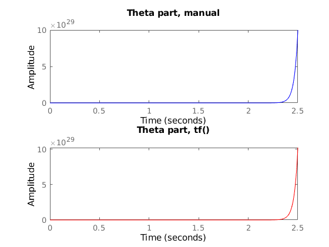
close; subplot(2,1,1); step(H_manual(2), 'b-') title('Alpha part, manual') subplot(2,1,2); step(H_matlab(2), 'r-') title('Alpha part, tf()')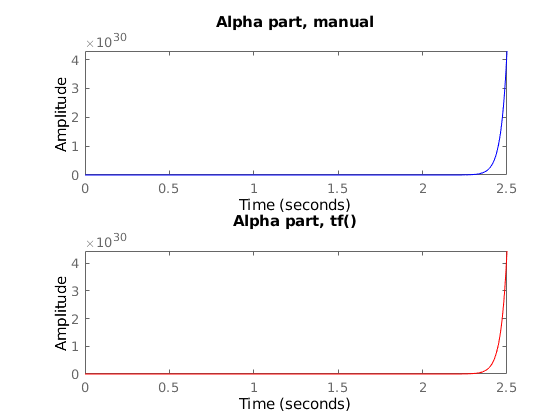
The manually computed and tf(sys_ss) transfer functions behave the same, so I conclude that they only look different due to numerical inaccuracies.
Verifying simulink state space and transfer function representations
I also checked if the state space and transfer function representations agreed in simulink: INSERT PICS HERE
Plant transfer functions
Before I move on, i remove the extremely small coefficients in the transfer functions, as they have virtually no impact) I verified this by checking that the poles didnt change.
close; H_theta = (921*s^2 - 191500)/(s^4 - 782*s^2); %theta transfer function H_alpha = (2921)/(s^2-782); %alpha transfer function H = [H_theta;H_alpha];
We end up with the following plant transfer functions:
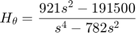
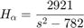
Plant step response
close; subplot(2,1,1); step(H_theta, 'b') title('Theta response') subplot(2,1,2); step(H_alpha, 'r') title('Alpha response')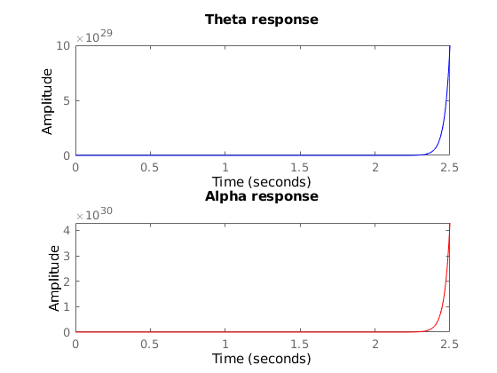
System stability and poles
The system is clearly unstable in both and .
Checking the poles with pzplot() and pole():
close; pzplot(H); pole(H_theta) pole(H_alpha)
ans =
0
0
27.9643
-27.9643
ans =
27.9643
-27.9643
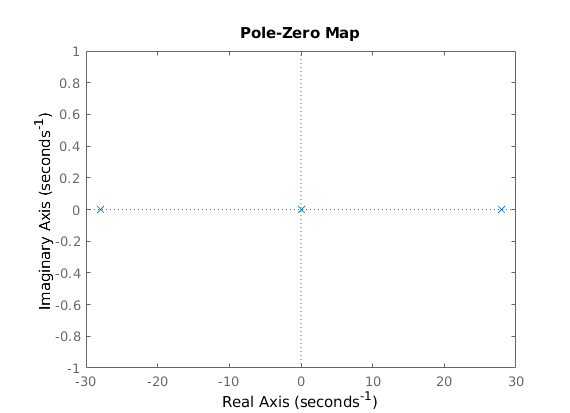 The transfer function 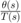 has four poles:
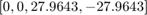
While the transfer function 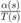 has two:
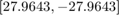
close;
Feedback gain vector k
We need to find a gain vector 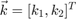 Which brings the poles/eigenvalues to -10, for our system:
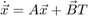